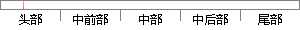

Check out my favorites list.
片段位置图

相似结果|
相似片段 1： Btn_Add_To_FavoriteStep 5At the My favorites page select the product which was added tothe favorites and check
相似片段 2： wanted list. We're going to have to check you out with Washington.”“How long will it take?
相似片段 3： like thename of someone who's on our wanted list. We're going to have to check you out withWashington.""How long will it take?
相似片段 4： { $_->io eq "out" } @all;my @inout = grep { $_->io eq "inout"} @all;# check driving direction # ERROR-4
|
※ 片段修改建议 ※
近似词参考：